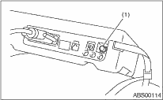

1. READ DIAGNOSTIC TROUBLE CODE (DTC)
1. Prepare the Subaru Select Monitor kit. 

2. Connect the diagnosis cable to the Subaru Select Monitor.
3. Insert the cartridge to the Subaru Select Monitor.

4. Connect the Subaru Select Monitor to the data link connector.
(1) The data link connector is located in the lower portion of the instrument panel (on the driver’s side).
|
(1) |
Data link connector |
(2) Connect the diagnosis cable to the data link connector.
CAUTION:
Do not connect the scan tools other than the Subaru Select Monitor.
5. Turn the ignition switch to ON (engine OFF) and turn the Subaru Select Monitor switch to ON.

|
(1) |
Power switch |
6. On the «Main Menu» display screen, select {Each System Check} and press the [YES] key.
7. On the «System Selection Menu» display screen, select {Brake Control} and press the [YES] key.
8. Press the [YES] key after the {ABS} is displayed.
9. On the «ABS Diagnosis» screen, select {DTC Display}, and then press the [YES] key.
NOTE:
• For details concerning the operation procedure, refer to the “SUBARU SELECT MONITOR OPERATION MANUAL”.
• For details concerning DTC, refer to “List of Diagnostic Trouble Code (DTC)”.
• Up to 3 DTCs are displayed in the order of detection.
• If a particular DTC is not stored in memory properly at the occurrence of problem (due to a drop in ABSCM&H/U power supply etc.), the DTC suffixed with a question mark “?” is displayed on Subaru Select Monitor display screen. This shows it may be an unreliable reading.
10. If communication is not possible between the ABS and the Subaru Select Monitor, check the communication circuit.
11. When DTC is not displayed, check the meter circuit and the CAN communication circuit.
|
Display |
Contents to be monitored |
|
Current |
The current DTC is displayed on Subaru Select Monitor display screen. |
|
Previous |
The latest DTC from the history of previous problems is displayed on Subaru Select Monitor display screen. |
|
Second previous |
The second latest DTC from the history of previous problems is displayed on the Subaru Select Monitor display screen. |
|
Third previous |
The third latest DTC from the history of previous problems is displayed on Subaru Select Monitor display screen. |
1. On the «Main Menu» display screen, select {Each System Check} and press the [YES] key.
2. On the «System Selection Menu» display screen, select the {Brake Control} and press the [YES] key.
3. Press the [YES] key after {ABS} is displayed.
4. On the «Brake Control Diagnosis» display screen, select the {Current Data Display/Save}, and then press the [YES] key.
5. On the «Display Menu» screen, select the data display method and press the [YES] key.
6. Using the scroll key, scroll the display screen up or down until necessary data is shown.
A list of the support data is shown in the following table.
|
Display |
Contents to be monitored |
Unit of measure |
|
FR Wheel Speed |
Wheel speed detected by front ABS wheel speed sensor RH is displayed. |
km/h or MPH |
|
FL Wheel Speed |
Wheel speed detected by front ABS wheel speed sensor LH is displayed. |
km/h or MPH |
|
RR Wheel Speed |
Wheel speed detected by rear ABS wheel speed sensor RH is displayed. |
km/h or MPH |
|
RL Wheel Speed |
Wheel speed detected by rear ABS wheel speed sensor LH is displayed. |
km/h or MPH |
|
BLS Signal |
Brake ON/OFF is displayed. |
ON or OFF |
|
G Sensor |
Vehicle acceleration detected by analog G sensor is displayed. |
m/s (m/s2) |
|
Valve Relay Signal |
Valve relay operation signal is displayed. |
ON or OFF |
|
ABS Warning Light |
ON operation of the ABS warning light is displayed. |
ON or OFF |
|
EBD Warning Light |
ON operation of the EBD warning light is displayed. |
ON or OFF |
|
Motor Relay Monitor |
Motor relay monitor voltage is displayed. |
V |
|
IG Power Supply Voltage |
Voltage supplied to ABSCM&H/U is displayed. |
V |
|
ABS Control Flag |
ABS control condition is displayed. |
ON or OFF |
|
ABS OK B Signal |
ABS system normal/abnormal is displayed. |
OK or NG |
NOTE:
For details concerning the operation procedure, refer to the “SUBARU SELECT MONITOR OPERATION MANUAL”.
1. On the «Main Menu» display screen, select the {2. Each System Check} and press the [YES] key.
2. On the «System Selection Menu» display screen, select the {Brake Control} and press the [YES] key.
3. Press the [YES] key after {ABS} is displayed.
4. On the «Brake Control Diagnosis» display screen, select {Clear Memory} and press the [YES] key.
|
Display |
Contents to be monitored |
|
Clear Memory? |
DTC deleting function |
5. When “Done” and “Turn ignition switch OFF” is shown on the display screen, turn the Subaru Select Monitor and ignition switch to OFF.
NOTE:
For details concerning the operation procedure, refer to the “SUBARU SELECT MONITOR OPERATION MANUAL”.
|
Display |
Contents to be monitored |
Index No. |
|
ABS sequence control |
Operate the valve and pump motor continuously to perform the ABS sequence control. |
|
NOTE:
• Data stored at the time of trouble occurrence is shown on the display.
• Each time a trouble occurs, the latest information is stored in the freeze frame data in memory.
• Up to 3 freeze frame data will be stored.
• If freeze frame data is not stored in memory properly (due to a drop in ABS control module power supply etc.), a DTC suffixed with a question mark “?” is displayed on Subaru Select Monitor display screen. This shows it may be an unreliable reading.
|
Display |
Contents to be monitored |
|
FR Wheel Speed |
Wheel speed detected by front ABS wheel speed sensor RH is displayed in km/h or MPH. |
|
FL Wheel Speed |
Wheel speed detected by front ABS wheel speed sensor LH is displayed in km/h or MPH. |
|
RR Wheel Speed |
Wheel speed detected by rear ABS wheel speed sensor RH is displayed in km/h or MPH. |
|
RL Wheel Speed |
Wheel speed detected by rear ABS wheel speed sensor LH is displayed in km/h or MPH. |
|
IG Power Supply Voltage |
Voltage supplied (V) to ABSCM&H/U is displayed. |
|
G Sensor |
Vehicle acceleration detected by analog G sensor is displayed. |
|
Motor Relay Monitor |
Motor relay condition is displayed. |
|
BLS Signal |
Brake ON/OFF is displayed. |
|
Vehicle Speed |
Vehicle speed calculated by ABS control module is displayed. |
|
ABS Control Flag |
ABS control condition is displayed. |
|
Power Supply Failure |
Whether abnormal voltage occurred or not is displayed during malfunction. |